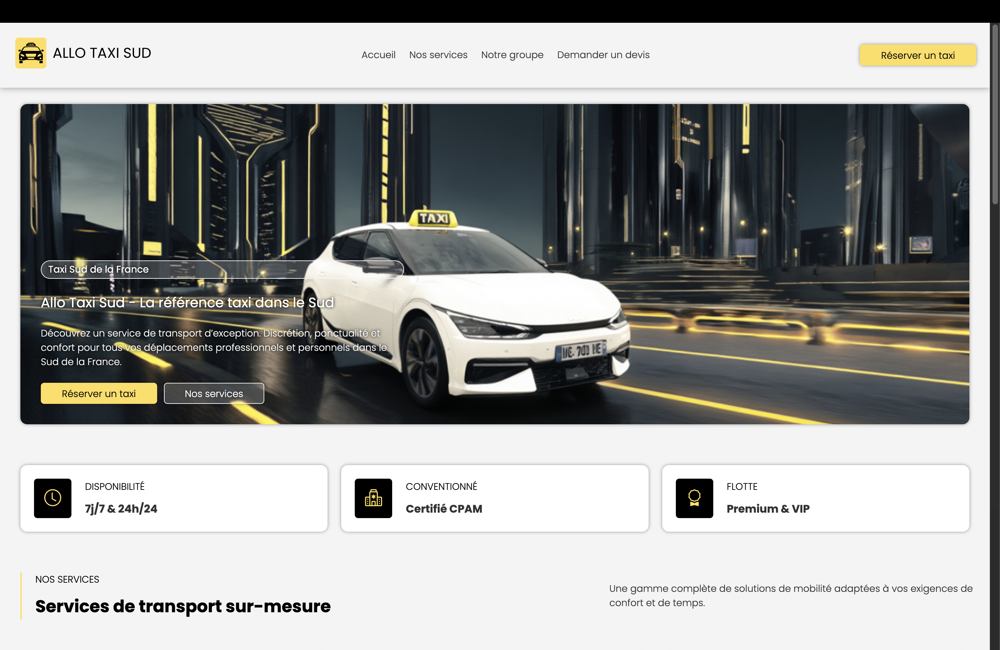
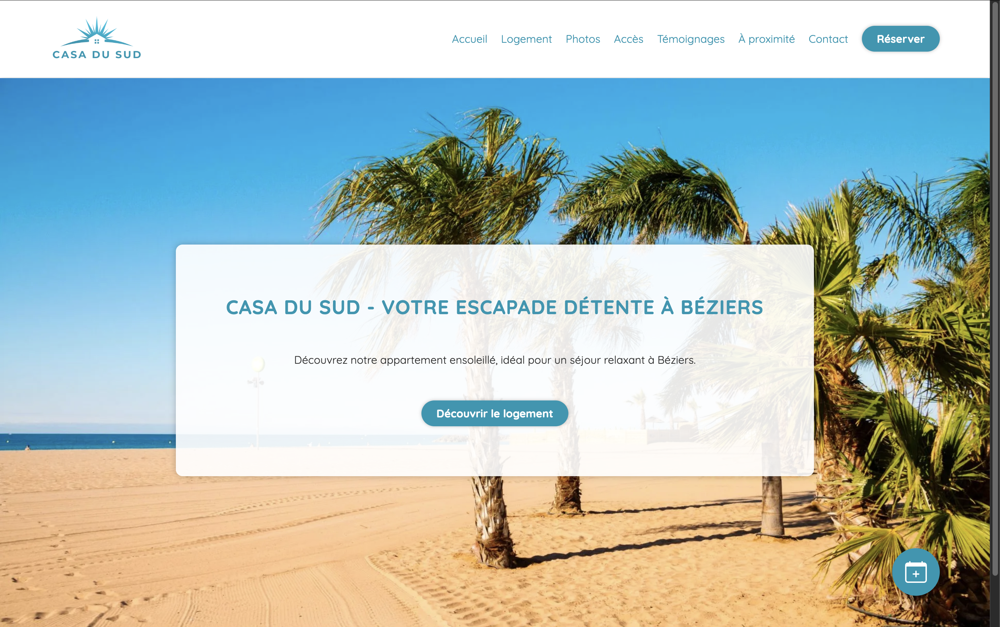
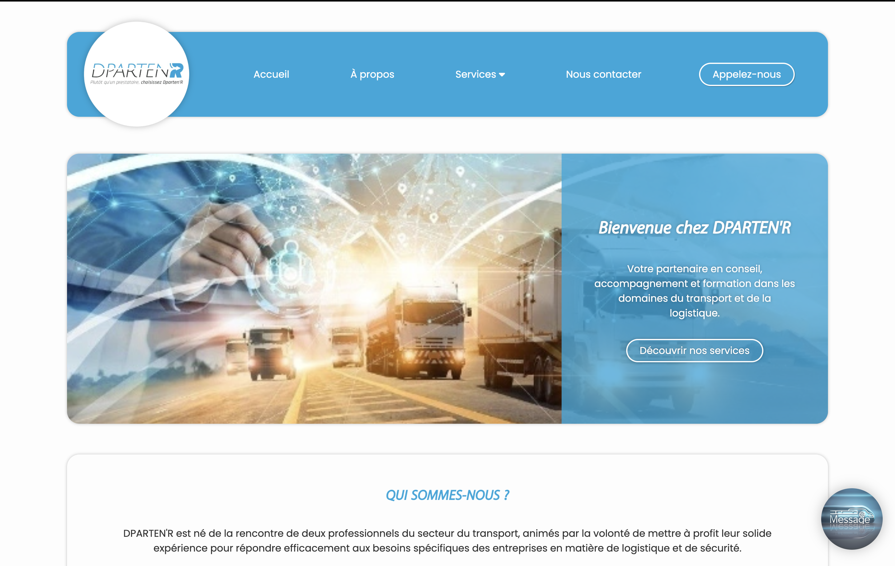
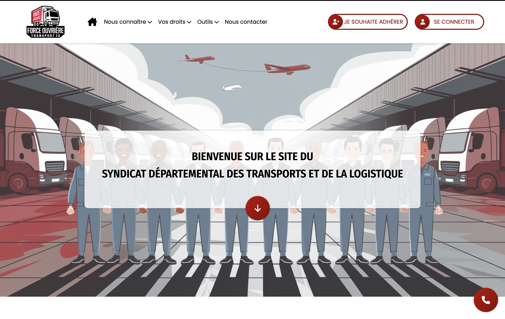

Projets techniques & laboratoires
Après 6 ans en tant que développeuse web full-stack indépendante, je développe aujourd’hui un profil technique orienté systèmes, réseaux et cybersécurité avec l’objectif de devenir investigatrice en fraude numérique. Ce portfolio présente différents projets techniques : développement web, laboratoires d’infrastructure et expérimentations en cybersécurité.
Laboratoires d'infrastructure et de réseau
Aucun projet pour le moment.
Piratage éthique et tests d'intrusion
Aucun projet pour le moment.
Développement web Fullstack

Herbier de Provence
- HTML
- SCSS
- JavaScript
- Responsive Design
Site vitrine développé sur mesure pour un grossiste en herbes aromatiques sauvages basé à Tarascon. Le projet met en valeur les produits et le savoir-faire local à travers une interface moderne et responsive entièrement développée en HTML, SCSS et JavaScript.
Voir le site ->
Allo Taxi Sud
- HTML
- SCSS
- JavaScript
- UX Mobile
Site vitrine conçu pour un groupement de taxis basé à Fontvieille afin de présenter leurs services et faciliter la prise de contact des clients. Développement front-end complet en HTML, SCSS et JavaScript avec un design adapté aux mobiles.
Voir le site ->
Beauty Star
- Python
- Flask
- HTML
- SCSS
- JavaScript
Application web développée pour un institut de beauté spécialisé en onglerie et beauté du regard à Tarascon. L'application repose sur Flask et permet la gestion des contenus et des services via une interface web dynamique.
Voir le site ->
Casa du Sud
- HTML
- SCSS
- JavaScript
- AirBnb Integration
Site vitrine pour une location de vacances située à Béziers présentant le logement, les équipements et l’environnement touristique. Le site est connecté au système de réservation AirBnb pour simplifier la gestion des réservations.
Voir le site ->
DParten'R
- HTML
- SCSS
- JavaScript
- Responsive Design
Site vitrine réalisé pour un cabinet de conseil et de formation spécialisé dans le transport et la logistique basé à Montpellier. Le projet met en avant les prestations de l’entreprise avec une interface claire et responsive.
Voir le site ->
FO Transports 13
- HTML
- SCSS
- JavaScript
- AssoConnect
Site vitrine développé pour le syndicat FO Transports et Logistique des Bouches-du-Rhône à Marseille. Le site est relié à la plateforme AssoConnect pour permettre la gestion des adhésions et faciliter l’accès aux services du syndicat.
Voir le site ->